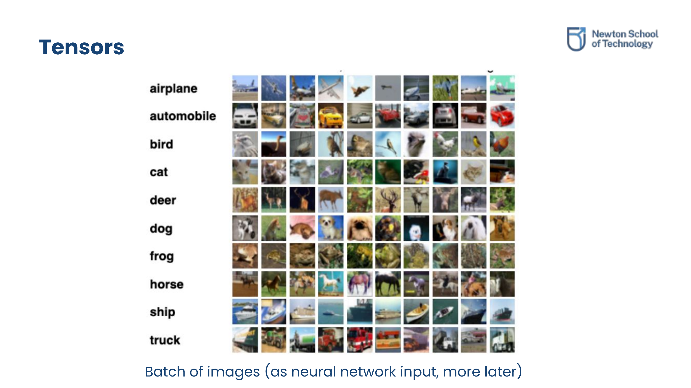
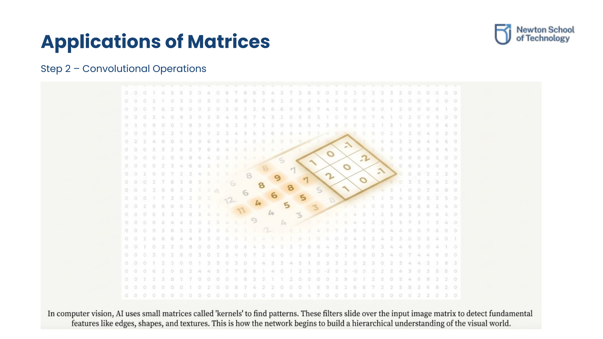
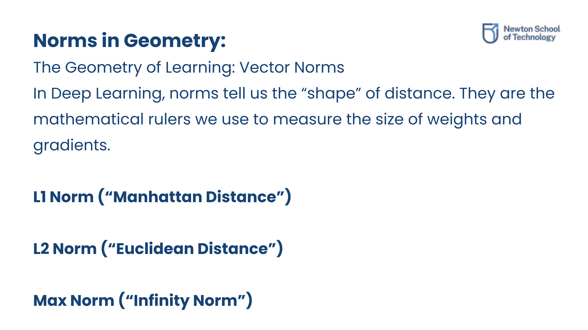

Scalars, Vectors & Matrices
1.1 Scalars
A scalar is a single number representing magnitude with no direction. It has zero dimensions. In deep learning, scalars serve as tuning hyper-parameters and thresholds.
- Learning Rate (η): e.g., 0.001
- Loss Value: e.g., 2.57
- Bias Term (b): e.g., 3.5
- Pixel Intensity: e.g., 255
1.2 Vectors
A vector is a one-dimensional array of numbers. It represents both magnitude and direction. Vectors bundle multiple related features of a single data point into a single object.
- Feature Vectors: A student profile vector: [height_cm, weight_kg, age_years].
- Embeddings: High-dimensional representation vectors (e.g., 300D word embeddings).
- Gradients: Direct vector paths indicating the optimal adjustment rate of neural parameters.
1.3 Matrices
A matrix is a two-dimensional grid of numbers (rows × columns). Rows represent independent observations (e.g., students, images), while columns represent attributes (e.g., scores, pixel values). A matrix acts as a linear transformation operator that maps input vectors to outputs: y = Wx + b.
An m × n matrix has m rows and n columns. For instance, a matrix with 8 elements can be structured as: 1×8, 8×1, 4×2, or 2×4.
Matrix Transpose (AT): Swaps rows and columns. If A is of order m × n, AT is of order n × m. Note that applying transpose twice returns the original matrix: (AT)T = A.
1.4 Types of Matrices
Understanding structural patterns in matrices is essential for optimization and neural computational efficiency:
- Row Vector: A matrix of size 1 × n (e.g., temporal step series:
[0, 1, 2, 3, 4, 5]of size 1 × 6). - Column Vector: A matrix of size m × 1. Generally, deep learning default representations assume vectors are column vectors.
- Square Matrix: A matrix with equal rows and columns (m = n).
- Diagonal Matrix: A square matrix where all non-diagonal elements are zero (aij = 0 for all i ≠ j).
- Scalar Matrix: A diagonal matrix whose main diagonal elements are all equal.
- Identity Matrix (I): A square matrix with ones on the main diagonal and zeros elsewhere (aii = 1, aij = 0 for i ≠ j). It leaves any matrix unchanged: AI = IA = A.
- Zero Matrix (Null Matrix): A matrix of any dimension where all elements are zero.
- Symmetric Matrix: A square matrix that is its own transpose (A = AT). The element at row i, column j equals the element at row j, column i (aij = aji).
Two matrices A and B are equal (A = B) if and only if:
- They have the exact same order (dimensions m × n).
- Each element of A is equal to its corresponding element in B (aij = bij for all i, j).
Multi-Dimensional Tensors
2.1 Generalization & Ranks
A tensor is a multi-dimensional array of numbers that generalizes scalars, vectors, and matrices to higher dimensions. The number of axes/dimensions of a tensor is called its Rank:
- Rank-0 Tensor: Scalar (single value)
- Rank-1 Tensor: Vector (1D list)
- Rank-2 Tensor: Matrix (2D table)
- Rank-3 Tensor: 3D array (e.g., RGB image: Height × Width × Color Channels)
- Rank-4 Tensor: 4D array (e.g., Batch of RGB images: Batch Size × Channels × Height × Width)

Visual mapping of a batch of color images represented as a Rank-4 tensor structure.
2.2 Common Tensor Operations
Deep learning models rotate, reshape, and reduce dimensions of tensors continuously:
- Reshape: Alters the dimension parameters (e.g., flattening a 2D image matrix into a 1D vector) without changing the underlying data.
- Broadcasting: Automatically replicates and expands smaller arrays (like adding a 1×4 bias vector to a 5×4 feature matrix) to make their shapes compatible for element-wise operations.
- Reduction: Summing or averaging along a specific axis (e.g., calculating batch mean in Batch Normalization).

How kernels shift over image matrices in Rank-3 tensors during convolutional neural layers.
Inner Products & Similarity
3.1 Dot Product & Similarity
The dot product between two vectors (x · y = Σ xiyi) computes their similarity, alignment, and projections. Geometric relation: v · w = ||v|| ||w|| cos(θ).
- cos(θ) ≈ 1: Vectors point in similar directions (highly correlated).
- cos(θ) = 0: Vectors are orthogonal (90-degree angle, completely independent, zero correlation).
- cos(θ) < 0: Vectors point in opposite directions (negatively correlated).
3.2 Matrix Multiplication & Properties
If A is m × n and B is n × p, then their product C = AB has shape m × p. Each element cij is the dot product of row i of A with column j of B.
Matrix multiplication is NOT commutative: AB ≠ BA.
Other matrix multiplication laws:
- Associative: A(BC) = (AB)C
- Distributive: A(B + C) = AB + AC
- Scalar multiplication properties: A(k B) = k(AB)
- Product Transpose: (AB)T = BTAT
3.3 Determinants & Inverses
Determinants offer geometric understanding of scaling factors. If a matrix has a zero determinant, it collapses the space, making inverse transformations impossible.
For a 2 × 2 matrix:
A = [a b]
[c d]The determinant is: |A| = ad - bc.
For a 3 × 3 matrix:
A = [a b c]
[d e f]
[g h i]The determinant is: |A| = a(ei - fh) - b(di - fg) + c(dh - eg).
Key Determinant Properties
- If any row or column of A is entirely zeros, then |A| = 0.
- The determinant of a matrix equals its transpose: |AT| = |A|.
- Multiplicative property: |AB| = |A||B|.
Matrix Inverse
A square matrix A is called nonsingular or invertible if there exists a matrix A-1 such that:
A A-1 = A-1 A = I
If |A| = 0, the matrix is singular and has no inverse. For a 2 × 2 matrix A, the inverse is calculated as:
A-1 = (1 / |A|) * [d -b; -c a]
We represent matrix division using the inverse: A / B = A · B-1. A property of transposes and inverses: (AT)-1 = (A-1)T.
Vector Norms & Regularization
4.1 Norm Types: L1, L2, and Max Norm
Vector norms are mathematical functions that measure the size or magnitude of vectors. They are used in deep learning to measure and restrict weight vectors and gradients:

Visual shapes of distances in 2D space: L1 norm (diamond), L2 norm (circle), and Max norm (square).
- L1 Norm (Manhattan Distance): Sum of absolute values: ||x||1 = Σ |xi|. It draws a diamond shape in 2D space.
- L2 Norm (Euclidean Distance): Straight-line distance: ||x||2 = √Σ xi2. It draws a circular boundary in 2D space.
- Max Norm (Infinity Norm): Cares only about the absolute maximum value: ||x||∞ = max(|xi|). It draws a square boundary.
4.2 Regularization (L1 vs. L2)
Regularization terms are added to the loss function to prevent overfitting by penalizing large weights:
- L1 Regularization (Lasso): Penalizes the L1 norm. It acts as a feature selector by forcing unimportant feature weights to become exactly zero (promoting Sparsity).
- L2 Regularization (Ridge / Weight Decay): Penalizes the squared L2 norm. It shrinks all weights towards zero but rarely hits exactly zero. It keeps weights small and spread out, ensuring model stability.
4.3 Gradient Norms & Stability
Gradient norms are monitored to ensure stable training:
To prevent Exploding Gradients, we calculate the L2 norm of the gradients. If it exceeds a threshold, we scale the gradients down. Similarly, Max-Norm Regularization acts as a hard ceiling to keep weights from growing past defined boundaries.
5-Minute Quiz & Solutions
Test your understanding of the concepts covered in Lecture 01. Click on the headings to reveal step-by-step solutions.
5.1 What is the difference between a vector and a tensor?
A vector is specifically a 1D array of numbers (a Rank-1 tensor). A tensor is a generalized multi-dimensional array representing data of any rank (e.g., Rank-0 is a scalar, Rank-2 is a matrix, Rank-3 is a volume block like an RGB image). Thus, all vectors are tensors, but not all tensors are vectors.
5.2 Why can matrix multiplication not be commutative?
Matrix multiplication represents a sequence of linear transformations applied in a specific order. Geometrically, rotating a space then shearing it is not the same as shearing first then rotating. Algebraically, the dimensions must match (AB is defined if columns of A match rows of B, but BA might be completely undefined if columns of B do not match rows of A). Even if both are square matrices, the output cells depend on different row-column combinations, leading to AB ≠ BA.
5.3 Compute the dot product: x = [1, 2, 3], y = [4, 5, 6]
The dot product is the sum of element-wise products:
x · y = (1 × 4) + (2 × 5) + (3 × 6) = 4 + 10 + 18 = 32
5.4 Find the shape of AB: A is 3×4 and B is 4×2
Since the inner dimensions match (columns of A = 4, rows of B = 4), multiplication is valid. The resulting matrix shape takes the outer dimensions:
Output Shape: 3 × 2
5.5 Outer Product Analysis: δ is 3×1, x is 5×1. Find shape of δ xT
Since δ has shape 3×1 and x has shape 5×1, the transpose xT has shape 1×5. We perform matrix multiplication between a 3×1 matrix and a 1×5 matrix:
Output Shape: 3 × 5
This is called the outer product of two vectors, commonly used in calculating gradient updates for weight matrices during backpropagation.
5.6 Why does CNN convolution require tensors instead of matrices?
A standard 2D grayscale image can be represented as a matrix, but color images have a third dimension (Red, Green, Blue channels). Furthermore, deep learning models process multiple images simultaneously in batches to utilize GPU parallelism. Therefore, input shapes must support 4 dimensions: (Batch Size × Channels × Height × Width), which requires Rank-4 tensors rather than standard Rank-2 matrices.
Original PDF Notes
Below is the original PDF document for your reference: